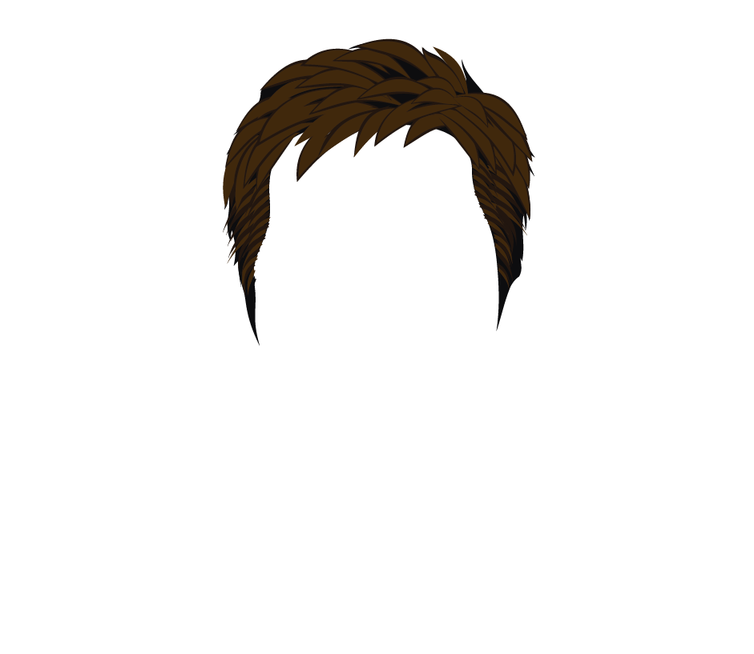
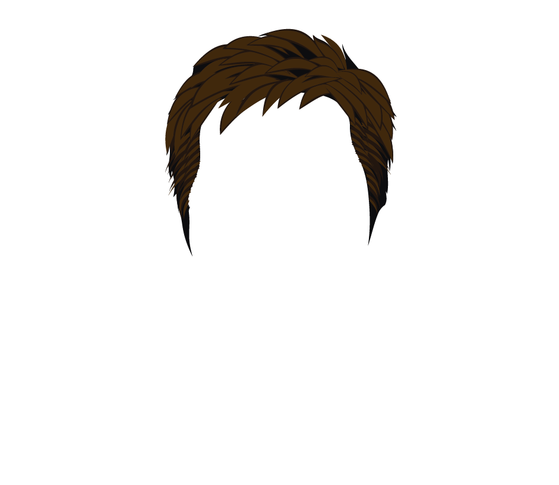
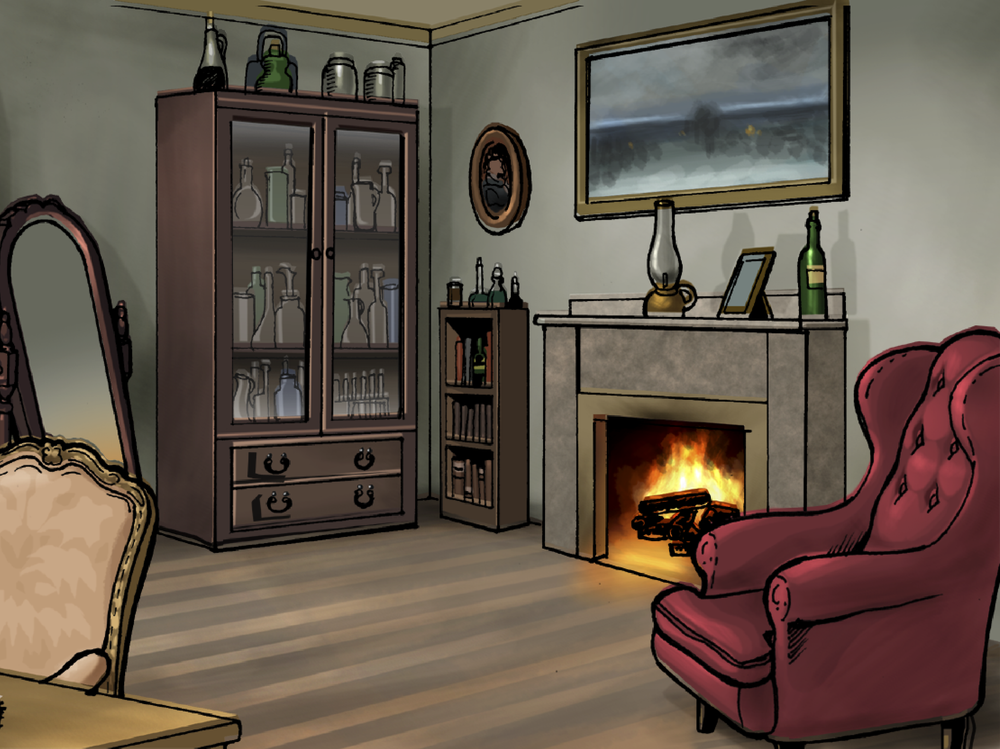

activismo.png
activismo.png


 






Unidad 1 RDC 2
Recurso Digital Complementario 2
Actividad 1:
Analicemos y comprendamos un
reportaje audiovisual
Actividad 2:
Trabjemos con tesis y
argumentos
En el Recurso Digital Complementario 2 podrás desarrollar dos actividades a partir de un reportaje audiovisual. Presiona el botón correspondiente para acceder a ellas.
Actividad 1: Reflexionemos sobre algunos inventos del ser humano
El reportaje que veremos a continuación presenta un grave problema medioambiental, que afecta a la fauna de una región de Chile. Mientras lo ves, piensa en cómo podrías ayudarme a resolver el conflicto que describe. Haz clic en botón para ver el video.
Los cisnes de Santo Domingo
Video : Los cisnes negros
Sección de preguntas
A continuación, podrás analizar y reflexionar sobre el reportaje visto respondiendo una serie de preguntas.
Pregunta 1 :
Selecciona la alternativa que consideres correcta y luego presiona el botón Comprobar.
¿Qué función cumplen las imágenes que se observan mientras habla el reportero?
Vuelve a
mirar este
fragmento del reportaje.
Mostrar el humedal al que se dirigen los cisnes en peligro.
Apoyar la explicación acerca de la sequiá del humedal El Yali.
Acompañar la descripción del complejo de humedales El Yali.
Presentar un ejemplo de humedal de la Zona Central de Chile.
¡Muy bien! El reportero describe el lugar mientras las imágenes muestran el complejo de humedales.
Recuerda que en un reportaje audiovisual se combina el lenguaje verbal y las imágenes, así que tienes que fijarte muy bien en la relación que se establece entre ambos elementos.
Pregunta 2 : Arrastra la respuesta correcta
¿Cuál de los siguientes enunciados del video corresponde a una opinión?
Arrastra aquí la respuesta correcta.
Estas aves pueden vivir hasta los veinte años en estado silvestre.
Yo creo que liberar ejemplares de la vida salvaje chilena es tener una esperanza en el futuro.
Son muy pocos los lugares donde este tipo de aves, en estado vulnerable y protegido por las leyes chilenas, podrían anidar.
El Yali es el humedal más importante de la zona central de Chile. Esto es avalado por varias investigaciones.
¡Muy bien! Podemos saber que se trata de una opinión porque parte diciendo “Yo creo que”, lo que nos indica que el emisor va a expresar su punto de vista.
Recuerda que las opiniones se expresan mediante fórmulas o marcadores de opinión como: “Yo creo”, “pienso que”, “en mi opinión”, etc.
Pregunta 3 : Arrastra la respuesta correcta
Al inicio del video, los cisnes de cuello negro caminaban por la carretera porque
-
Selecciona una opción
¡Excelente! Esto lo dice el encargado del centro de rescate entrevistado en el reportaje.
Recuerda que el reportaje se trata acerca de la sequiía del humedal y las consecuencias que tiene esto para los cisnes que habitan allí.
Pregunta 4 :
Selecciona la alternativa que consideres correcta y luego presiona el botón Comprobar.
¿A qué se debe la sequía de El Yali?
A la ausencia de lluvias.
Al uso desmedido del agua.
A la contaminación del lugar.
A la desprotección del humedal.
¡Excelente! Comprendiste muy bien las causas del problema que expone el reportaje.
Recuerda que en los reportajes se entrega mucha información, por lo que te será útil anotar los datos más importantes.
Actividad 1: Reflexionemos sobre algunos inventos del ser humano
Has terminado de responder las preguntas. Revisa las respuestas correctas.
Recuerda las preguntas y revisa las respuestas correctas:
Recuerda las preguntas y revisa las respuestas correctas:
- 1. ¿Qué función cumplen las imágenes que se observan mientras habla el reportero?
- 2. ¿Cuál de los siguientes enunciados del video corresponde a una opinión?
- 3. Al inicio del video, los cisnes de cuello negro caminaban por la carretera
porque "su humedal se estaba secando."
- 4. ¿A qué se debe la sequía de El Yali?
- C. Acompañar la descripción del complejo de humedales El Yali.
- “Yo creo que liberar ejemplares de la vida salvaje chilena es tener una esperanza en el
futuro”.
- B. Al uso desmedido del agua.
Actividad 2: Analicemos y comprendamos un reportaje audiovisual
Comenzar
Pensemos en una manera de resolver el problema de los cisnes de Santo Domingo! Ayúdame a identificar soluciones posibles para solucionar este grave problema ambiental. Haz clic en Comenzar.
Relaciona cada tema con la tesis y el argumento adecuados. Arrastra los enuncados a la columna correspondiente.
Tema: La sequía de El Yali.
Tema: La situación de los cisnes de cuello negro.
Tema: El complejo de humedales El Yali.
Tesis: Ampliar la protección del complejo permitirá evitar los problemas y abusos.
Tesis: Proteger los humedales de la sequía permitirá resguardar la vida de los cisnes.
Tesis: Restringir el uso de agua por parte de los agricultores permitirá combatir la sequía.
Argumento: La sequía provoca que los padres abandonen a sus crías para migrar a un mejor lugar, lo que pone en riesgo a crías y padres.
Argumento: El uso desmedido del agua para cultivos ha favorecido la sequía de El Yali.
Argumento: Solo una pequeña parte del complejo está protegida, por lo que el resto está a merced de agricultores y empresas.
- • ¿Qué características de los héroes poseen los miembros del centro de rescate?, ¿se
parecen en algo a los héroes que conoces?
- • ¿Qué tipo de enemigo deben enfrentar los héroes del video? Compañalo con los enemigos de los textos que has leído.
Has terminado las actividades del RDC 2.Te invito a comentar con tus compañeros las siguientes preguntas. ¡Nos vemos en el próximo!
Unidad 2 RDC 5
UNIDAD 2 RDC 5
Actividad1: Ordenemos las partes de una secuencia narrativa
Unidad 2 RDC 5
Arrastra cada fotograma al lugar que le corresponde en la secuencia temporal.
Unidad 2 RDC 5
Unidad 2 RDC 5
UNIDAD 2 RDC 5
Actividad 2: Analicemos e interpretemos un cortometraje sobre la amistad
Unidad 2 RDC 5
Unidad 2 RDC 5
Une los elementos que se relacionan con la idea de amistad desarrollada en el cortometraje.

Unidad 2 RDC 5
¿Qué caracteriza a los colores empleados en el corto?
Arrastra dos
opciones al recuadro destacado.
Unidad 2 RDC 5
¿Qué diferencia a la música del inicio y del final del cortometraje?
Unidad 2 RDC 5
¿Qué mensaje comunica el cortometraje?
Tienes 250 caracteres para
fundamentar tu respuesta.
UNIDAD 2 RDC 5
UNIDAD 2 RDC 5
UNIDAD 2 RDC 5
En el Recurso Digital Complementario 8 podrás realizar tres actividades relacionadas con un mito de creación de la cultura maya. Presiona el botón correspondiente para acceder a ellas.
Actividad 1: Leamos y comprendamos un mito maya.
Actividad 2: Veamos un video sobre la civilización maya.
Actividad 3: Relacionemos el mito con la cultura que le dio origen.
Te invito a conocer un mito de la civilización maya. El texto que leerás a continuación es un fragmento del Popol Vuh, libro sagrado de la cultura maya quiché, que recopila sus mitos de creación. Durante la lectura, fíjate en qué características de la cultura maya se pueden inferir a partir del relato.
Progenitor
Significado: pariente en línea recta ascendente de una persona, en especial el padre o la madre. Sinónimos: antepasado, padre, antecesor.
“Camila se atreve a entrar al mar únicamente en compañía de su progenitor”.
Significado: pariente en línea recta ascendente de una persona, en especial el padre o la madre. Sinónimos: antepasado, padre, antecesor.
“Camila se atreve a entrar al mar únicamente en compañía de su progenitor”.
Sustentar
Significado: proveer a alguien del alimento necesario. Sinónimos: alimentar, mantener.
“Mónica trabaja mucho porque sustenta sola a su familia”.
Significado: proveer a alguien del alimento necesario. Sinónimos: alimentar, mantener.
“Mónica trabaja mucho porque sustenta sola a su familia”.
Esclarecido
Significado: dicho de una persona o de su linaje: Ilustre, insigne, honorable. Sinónimos:ilustre, insigne, célebre.
“Nicanor Parra es un esclarecido poeta chileno, que recibió el premio Miguel de Cervantes de Literatura el año 2011”.
Significado: dicho de una persona o de su linaje: Ilustre, insigne, honorable. Sinónimos:ilustre, insigne, célebre.
“Nicanor Parra es un esclarecido poeta chileno, que recibió el premio Miguel de Cervantes de Literatura el año 2011”.
Vasallo
Significado: persona que reconoce a otra por superior o tiene dependencia de ella. Sinónimos:súbdito, servidor, siervo.
“En la Edad Media, el vasallo juraba fidelidad a su señor y adquiría ciertas obligaciones con él”.
Significado: persona que reconoce a otra por superior o tiene dependencia de ella. Sinónimos:súbdito, servidor, siervo.
“En la Edad Media, el vasallo juraba fidelidad a su señor y adquiría ciertas obligaciones con él”.
Mazorca
Significado: fruto en espiga densa, con granos muy juntos, de ciertas plantas gramíneas, como el maíz. Sinónimos:panoja, panocha, choclo.
“Carmen todos los veranos compra muchas mazorcas para comerlas con mantequilla”.
Significado: fruto en espiga densa, con granos muy juntos, de ciertas plantas gramíneas, como el maíz. Sinónimos:panoja, panocha, choclo.
“Carmen todos los veranos compra muchas mazorcas para comerlas con mantequilla”.
Deleite
Significado: placer del ánimo y de los sentidos. Sinónimos:agrado, placer, goce.
“La cena que preparó Gustavo para Navidad fue todo un deleite”.
Significado: placer del ánimo y de los sentidos. Sinónimos:agrado, placer, goce.
“La cena que preparó Gustavo para Navidad fue todo un deleite”.
Pataxte
Significado: Árbol de hasta 18 m de altura, de hojas simples, flores de cinco pétalos y fruto en forma de baya, similar al del cacao, que se emplea en repostería.
Significado: Árbol de hasta 18 m de altura, de hojas simples, flores de cinco pétalos y fruto en forma de baya, similar al del cacao, que se emplea en repostería.
zapotes
Significado: Árboles propios de la zona en la que se desarrolló la civilización maya. Cada uno de da un fruto con su mismo nombre, y eran parte fundamental de la alimentación de los mayas.
Sinónimos:anonas, jocotes, nances, matasanos.
Ixmucané
Significado: Según el Popol Vuh, es la diosa que formó a los hombres de maíz, mezclando varias clases de este grano y moliéndolas hasta que tuvieran la consistencia adecuada para formar el cuerpo del hombre.
Platica
Significado: acción de hablar. Sinónimos:conversación, charla.
“Andrea y Susana se encontraron casualmente en la plaza y tuvieron una plática muy agradable”.
Significado: acción de hablar. Sinónimos:conversación, charla.
“Andrea y Susana se encontraron casualmente en la plaza y tuvieron una plática muy agradable”.
Popol Vuh
Anónimo
He aquí, pues, el principio de cuando se dispuso hacer al hombre, y cuando se buscó lo que debía entrar en la carne del hombre. Y dijeron los progenitores , los Creadores y Formadores, que se llaman Tepeu y Gucumatz: “Ha llegado el tiempo del amanecer, de que se termine la obra y que aparezcan los que nos han de sustentar y nutrir, los hijos esclarecidos , los vasallos civilizados; que aparezca el hombre, la humanidad, sobre la superficie de la tierra”. Así dijeron. Se juntaron, llegaron y celebraron consejo en la oscuridad y en la noche; luego buscaron y discutieron, y aquí reflexionaron y pensaron. De esta manera salieron a luz claramente sus decisiones y encontraron y descubrieron lo que debía entrar en la carne del hombre. Poco faltaba para que el sol, la luna y las estrellas aparecieran sobre los Creadores y Formadores De Paxil, de Cayalá, así llamados, vinieron las mazorca amarillas y las mazorcas blancas. Estos son los nombres de los animales que trajeron la comida: Yac [el gato del monte], Utiú [el coyote], Quel [una cotorra vulgarmente llamada chocoyo] y Hoh [el cuervo]. Estos cuatro animales les dieron la noticia de las mazorcas amarillas y las mazorcas blancas, les dijeron que fueran a Paxil y les enseñaron el camino de Paxil. Y así encontraron la comida y esta fue la que entró en la carne del hombre creado, del hombre formado; esta fue su sangre, de esta se hizo la sangre del hombre. Así entró el maíz [en la formación del hombre] por obra de los Progenitores. Y de esta manera se llenaron de alegría, porque habían descubierto una hermosa tierra, llena de deleites , abundante en mazorcas amarillas y mazorcas blancas y abundante también en Pataxte, zapotes y miel. Abundancia de sabrosos alimentos había en aquel pueblo llamado de Paxil y Cayalá. Había alimentos de todas clases, alimentos pequeños y grandes, plantas pequeñas y plantas grandes. Los animales enseñaron el camino. Y moliendo entonces las mazorcas amarillas y las mazorcas blancas, hizo Ixmucané nueve bebidas, y de este alimento provinieron la fuerza y la gordura y con él crearon los músculos y el vigor del hombre. Esto hicieron los Progenitores, Tepeu y Gucumatz, así llamados. A continuación entraron en Platicas acerca de la creación y la formación nuestra primera madre y padre. De maíz amarillo y de maíz blanco se hizo su carne; de masa de maíz se hicieron los brazos y las piernas del hombre. Únicamente masa de maíz entró en la carne de nuestros padres, los cuatro hombres que fueron creados.Anónimo (1981). Popol Vuh. México D. F.: Fondo de Cultura Económica. (Fragmento).
A continuación, podrás analizar y reflexionar sobre el mito leído respondiendo algunas preguntas.
1. El Popol Vuh es un mito. ¿Qué caracteriza a este tipo de relatos?
A. Entregan una moraleja.
B. Dan una visión objetiva de la
realidad.
C. Cuentan anécdotas de distintos
pueblos.
D. Son relatos de origen sagrado
transmitidos oralmente.
¡Excelente! Explicar el origen de las cosas es una de las características principales de este tipo de relatos.
Relee el texto y fíjate en su propósito.
Casilla de respuestas
2. Elige cuáles de las siguientes ideas es posible desprender del texto leído.
Luego, comenta tu elección con tu compañera o compañero.
La intervención de los dioses en la formación de la Tierra.
El origen del maíz del que se hizo al ser humano.
La creación del ser humano a partir del maíz.
Cómo se pobló el mundo por los primeros cuatro seres humanos.
Pregunta 3
Tipo de pregunta: escritura usando teclado
3. Escribe a continuación tres características importantes de Tepeu y Gucumatz. Luego, presiona el botón Finalizar para revisar tu respuesta.
Tipo de pregunta: escritura usando teclado
3. Escribe a continuación tres características importantes de Tepeu y Gucumatz. Luego, presiona el botón Finalizar para revisar tu respuesta.
Escoge respuesta:
Se basa en marcas textuales que justifican las características de los personajes.
Considera elementos importantes de los personajes.
Se basa en marcas textuales que justifican las características de los personajes.
Considera elementos importantes de los personajes.
Pregunta 4
Tipo de pregunta: escritura usando teclado
4. Comenta con un grupo de tres compañeros la siguiente pregunta: ¿Qué visión de mundo pueden identificar en este mito? Luego, lleguen a un acuerdo y escriban la respuesta en el espacio a continuación.
Tipo de pregunta: escritura usando teclado
4. Comenta con un grupo de tres compañeros la siguiente pregunta: ¿Qué visión de mundo pueden identificar en este mito? Luego, lleguen a un acuerdo y escriban la respuesta en el espacio a continuación.
Has terminado de responder las
preguntas. ¡Sigamos adelante!
A continuación, verás un video sobre la civilización maya. Mientras lo observas, presta atención a la información que pueda ayudarte a entender cómo eran los mayas y cuál era su visión de mundo. Haz clic en el botón de avance para continuar.
Ahora podrás analizar y reflexionar sobre el video respondiendo una serie de preguntas. ¡Adelante!
1. Arrastra la alternativa que consideres
correcta
a la casilla de respuesta
y luego presiona el botón Comprobar.
A. Sudamérica.
B. Norteamérica.
C. Centroamérica
D. Latinoamérica.
¡Excelente! Explicar el origen de las cosas es una de las características principales de este tipo de relatos.
Relee el texto y fíjate en su propósito.
Casilla de respuestas
Haz clic en la respuesta correcta.
2. ¿Cómo se organizaban políticamente los mayas?
2. ¿Cómo se organizaban políticamente los mayas?
A. País.
B. Imperio.
C. Pueblos imperio.
D. Ciudades estado.
¡Así es!
Cada ciudad tenía su propia organización.
Cada ciudad tenía su propia organización.
Fíjate bien, ¿se parecían a otras culturas en Europa?
3. ¿Qué cultura tuvo influencia directa en los mayas?
A. griega.
B. olmeca.
C. romana.
D. mexicana.
Bien! Los olmecas fueron los precursores de la cultura maya.
¡Fíjate otra vez!, ¿es esta la cultura de la que aprendieron los mayas?
Casilla de respuestas
4. Para los mayas ¿por qué era importante
construir
pirámides cada vez más altas?.
A. Mientras más altas, más cerca del
cielo
y, por lo tanto, de los dioses.
B. Mientras más alto enterraban a los
reyes,
más pronto llegarían al cielo.
C. Para que el pueblo se sintiera
orgulloso
de sus imponentes
construcciones.
construcciones.
D. Porque ahí habitaban los sacerdotes y
ellos necesitaban estar sobre el pueblo para guiarlo.
¡Muy bien! En las construcciones se reflejaba la importancia que tenían los dioses para los mayas.
¡Escucha con atención! Seguro que construir pirámides cada vez más altas debía tener un sentido mayor para los mayas.
Casilla de respuestas
Haz clic en la respuesta correcta.
5. ¿Qué hacía que las diferentes ciudades constituyeran una sola cultura?
5. ¿Qué hacía que las diferentes ciudades constituyeran una sola cultura?
A. Tenían el mismo rey.
B.
Participaban en
actividades comunes.
C. Construían
juntos las plazas, pirámides y armas.
D. Tenían en
común
la religión, el calendario y el idioma.
¡Excelente! Tener estos elementos en común
unificaba a la cultura maya y la convertía en una gran civilización.
Fíjate otra vez, ¿bastaba esto para constituir una gran civilización?
Has terminado de responder las
preguntas.
Revisa cómo lo hiciste.
Revisa cómo lo hiciste.
1. ¿En qué zona habitaba la civilización maya?
D. Centroamérica.
2. ¿Cómo se organizaban políticamente los mayas?
D. Como ciudades estado.
3. ¿Qué cultura tuvo influencia directa en los mayas?
B. olmeca.
4. Para los mayas ¿por qué era importante construir
pirámides cada vez más altas?
A. Mientras más altas, más cerca del cielo y,
por lo tanto, de los dioses.
5. ¿Qué hacía que las diferentes ciudades constituyeran una sola cultura?
D. Tenían en común la religión, el calendario y el idioma.
¡Juguemos al memorice! Empareja cada fragmento del Popol Vuh, leído en la Actividad 1, con un fragmento del video sobre los mayas, que viste en la Actividad 2. Haz clic sobre la carta para descubrir su contenido y encontrar su par.
A continuación, podrás reflexionar sobre el video, el mito leído y tus propias experiencias conversando con tus compañeros. Haz clic para continuar.
Reúnete con tres compañeros, contesten las siguientes preguntas y luego compártanlas con el resto del curso.
1. Describe los rasgos más importantes de la visión de mundo de los mayas que conociste en este RDC.
2. ¿Cuál de los recursos trabajados (el mito y el video) crees que te permitió comprender mejor la visión de mundo de los mayas?, ¿por qué?
3. ¿Qué semejanzas y diferencias hay entre la visión de mundo de los mayas y la tuya?, ¿a qué crees que se deben estas diferencias?
Has llegado al final del RDC 8. Para concluir, te invito a reflexionar y luego a comentar con tus compañeros la siguiente pregunta. ¡Nos vemos en el próximo!
• ¿Consideras que conocer el contexto en que surgió el Popol Vuh, mediante el video sobre la cultura maya, te sirvió para comprenderlo de manera más profunda?, ¿por qué?
En el Recurso Digital Complementario 9 podrás realizar dos actividades relacionadas con el
origen del universo. Presiona el botón correspondiente para acceder a ellas.
Actividad 1:
Un video sobre el origen del universo
Actividad 2:
Escribe una explicación mitológica del big bang
Actividad 1: Veamos un video sobre el origen del universo
¿Qué sabes sobre el origen del universo y el big bang? Te invito a ver un video que aborda estos temas. Haz clic para continuar.
Ahora podrás analizar y reflexionar sobre el video respondiendo una serie de preguntas.
1. ¿Qué explica el big bang?
A. El origen del universo.
B. De qué está compuesta la Tierra.
C. Cómo surgen el tiempo y el espacio.
D. La temperatura que permite que exista el mundo.
¡Excelente! El big bang es la explosión que dio origen al universo.
¡Mira con atención! ¿Este tema logra explicar todos los elementos que explica el big bang?
Casilla de respuestas
2. Si el video fuera un texto, ¿qué tipo de texto sería?
A. Un texto narrativo.
B. Un texto expositivo.
C. Un texto periodístico.
D. Un texto argumentativo
¡Muy bien! El video presenta o expone información objetiva.
Pon atención en el texto del video e intenta identificar a partir del lenguaje y el nivel de información, qué tipo de texto puede ser.
Casilla de respuestas
3. ¿Qué importancia tiene la imagen en el video?
A. Permite hacer visible la creación del universo.
B. Sirve para introducir la idea de origen.
C. Reemplaza el discurso de la relatora.
D. Ilustra los conceptos más complejos.
¡Así es! Las imágenes muestran una representación de la gran explosión, de la que no hay registros visuales.
Vuelve a ver el video y relaciona las imágenes con el discurso de la relatora.
Casilla de respuestas
4. ¿Qué lenguaje se utiliza para entregar la información dada en el video?
A. Espontáneo.
B. Literario.
C. Coloquial.
D. Técnico.
¡Excelente! El lenguaje se utiliza para que la información sea lo más precisa posible.
¿Te parece que este lenguaje es lo suficientemente preciso para explicar un fenómeno complejo?
Casilla de respuestas
5. ¿Qué función cumple la música en el relato del video? Cumple la función de:
A. Dar suspenso a todo el relato.
B. Marcar los hitos dentro del relato.
C. Ir con el movimiento de las imágenes.
D. Acompañar el relato sin llamar la atención.
¡Excelente! El lenguaje se utiliza para que la información sea lo más precisa posible.
¿Te parece que este lenguaje es lo suficientemente preciso para explicar un fenómeno complejo?
Casilla de respuestas
Has terminado de responder las preguntas.
Revisa cómo lo hiciste.
Recuerda las preguntas y revisa las respuestas correctas:
"1. ¿Qué explica el big bang?"
A. El origen del universo.2. Si el video fuera un texto, ¿qué tipo de texto sería?
B. Un texto expositivo.3. ¿Qué importancia tiene la imagen en el video?
A. Permite hacer visible la creación del universo.
4. ¿Qué lenguaje se utiliza para entregar la información dada en el video?
A. Técnico.5. ¿Qué función cumple la música en el relato del video? Cumple la función
de:
B. marcar los hitos dentro del relato.
A continuación, te invito a comentar con tus compañeros algunas preguntas sobre el video visto y el concepto de visión de mundo. Reúnete en grupos de 4 a 6 integrantes y luego compartan sus respuestas con el resto del curso.
• ¿Qué sabías sobre el big bang antes de ver el video?
• ¿Por qué crees que esta teoría sobre
el origen del universo es la más aceptada hoy en día?• ¿Qué relación tiene su aceptación
con la visión de mundo en la actualidad?
Actividad 2: Escribe una explicación mitológica del big bang
Luego de haber conocido la teoría científica más aceptada en la actualidad para explicar el
origen del universo, el big bang o gran explosión, te invito a detenerte.
Imagina que
eres parte de un pueblo que vive en una época remota. Entre todos los pobladores intentan
explicar el origen del mundo mediante un relato, en el que intervienen fuerzas sobrenaturales
que producen una gran explosión. Escribe ese relato.Haz clic para continuar.
Actividad 2: Escribe una explicación mitológica del big bang
Para escribir tu mito, sigue estos pasos:
• Imagina una explicación sobrenatural para la gran explosión.
• Crea, según lo anterior, la secuencia de hechos que llevaron a que se originara el
universo.
• Define las características de los personajes del mito y las motivaciones que tendrán para
actuar. Recuerda que los personajes míticos tienen características sobrenaturales.
• Elige el tipo de narrador que utilizarás y determina si presentarás las voces de los
personajes de manera directa, indirecta o ambas.
• Sitúa la historia en un tiempo remoto, muy antiguo.
• Recuerda que la narración debe presentar una situación inicial, un desarrollo y un
desenlace.
• Procura que el mito tenga una extensión de tres a cuatro párrafos.
GUARDAR
Evalúa, corrige y reescribe tu texto con la siguiente tabla. Puedes volver al texto haciendo clic en el botón Corregir y reescribir.
1. ¿El mito presenta una explicación sobrenatural para el big bang?
2. ¿La explicación es clara y comprensible para el lector?
3. ¿La narración tiene situación inicial, desarrollo y desenlace?
4. ¿Los personajes tienen rasgos sobrenaturales y se describen sus motivaciones para actuar?
5. ¿Se mantiene el mismo narrador durante todo el relato?
6. ¿Los hechos narrados se sitúan en un tiempo remoto, muy antiguo?
7. ¿El mito tiene una extensión de entre tres y cuatro párrafos?
Una vez que tengas corregido tu mito, guárdalo y pídele a tu profesor que lo imprima.
Ahora, te invito a que realices una tertulia literaria con tu curso, en la que tú y tus
compañeros leerán y comentarán sus creaciones, y reflexionarán acerca de la visión de mundo.
Recuerda respetar los turnos de habla y escuchar respetuosamente las opiniones distintas
a las tuyas durante la tertulia. Haz clic para continuar.
Para desarrollar la tertulia literaria con los mitos sobre el big bang…
• Organicen al curso según lo aprendido sobre la tertulia literaria en la Unidad 1 del
Texto del estudiante.
• Lean cada mito de manera clara y pausada. Luego, los compañeros comentarán qué les
pareció, en términos generales, la explicación que presenta sobre el big bang.
• Luego de que todos los compañeros hayan leído sus mitos, el profesor propondrá las
siguientes preguntas para continuar la conversación:
• ¿Qué visión de mundo se puede identificar en los mitos creados por
el curso?
• ¿En qué se diferencian los mitos sobre el big bang de la teoría
científica que explica que el big bang dio origen al universo?
• ¿Qué grandes diferencias hay entre los mitos de culturas antiguas,
como el Popol Vuh, y la visión de mundo del ser humano actual?
Has terminado las actividades del RDC 9 y el trabajo con la tercera unidad de tu libro. Te
invito a comentar con tus compañeros las siguientes preguntas.
¡Mucho gusto de conocerte!
• ¿Por qué crees que los mitos son importantes para el estudio de la cultura humana?
• ¿Crees que tu creación del mito sobre el origen del universo se vio influenciada por tu
visión de mundo?
¿Por qué y cómo?